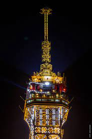

La tour Eiffel [tuʁɛfɛl] Écouter est une tour de fer puddlé de 330 m2 de hauteur (avec antennes) située à Paris, à l’extrémité nord-ouest du parc du Champ-de-Mars en bordure de la Seine dans le 7e arrondissement. Son adresse officielle est 5, avenue Anatole-France. Construite en deux ans par Gustave Eiffel et ses collaborateurs pour l'Exposition universelle de Paris de 1889, célébrant le centenaire de la Révolution française, et initialement nommée « tour de 300 mètres », elle est devenue le symbole de la capitale française et un site touristique de premier plan : il s’agit du quatrième site culturel français payant le plus visité en 2016, avec 5,9 millions de visiteurs3. Depuis son ouverture au public, elle a accueilli plus de 300 millions de visiteurs4. D’une hauteur de 312 mètreso 1 à l’origine, la tour Eiffel est restée le monument le plus élevé du monde pendant quarante ans. Le second niveau du troisième étage, appelé parfois quatrième étage, situé à 279,11 mètres, est la plus haute plateforme d'observation accessible au public de l'Union européenne et la deuxième plus haute d'Europe, derrière la tour Ostankino à Moscou culminant à 337 mètres. La hauteur de la tour a été plusieurs fois augmentée par l’installation d'un drapeau puis de nombreuses antennes, notamment en 1991, 1994, 2000 et 2022. Utilisée dans le passé pour de nombreuses expériences scientifiques, elle sert aujourd’hui d’émetteur de programmes radiophoniques et télévisés.
La Tour Eiffel comporte trois étages : le premier étage, le deuxième étage et le sommet. Si le premier étage est célèbre pour ses planchers de verre, le second est extrêmement populaire pour ses vues sur Paris. Le sommet de la Tour Eiffel est le plus haut pont d'observation public de l'Union européenne et offre sans doute la plus belle vue panoramique de la ville.
Découvrez la tour Eiffel ! Partez à la rencontre du monument le plus incontournable de Paris Construite à l’occasion de l’exposition universelle de 1889, la tour Eiffel est sans conteste le symbole de Paris. Haute de 330 m, elle surplombe la ville depuis le Champ-de-Mars et émerveille les visiteurs depuis des générations. Scintillante de nuit, équipée d’une patinoire l’hiver, elle n’en finit plus d’innover et d’étonner ceux qui l’aperçoivent ou qui la gravissent. Vous aussi, découvrez l’un des plus célèbres monuments de Paris et même du monde ! 3 étages pour 3 ambiances esplanade du trocadéro avec vue sur la tour eiffel soleil couchant Prenez de la hauteur ! D’étage en étage, la tour Eiffel dévoile aux visiteurs ses différents visages. Premier étage : l’expérience du vide Situé à 57 mètres au-dessus du sol, le premier étage de la tour Eiffel propose aux visiteurs de découvrir l’histoire de ce monument mythique de Paris par l’intermédiaire d’un parcours culturel ludique et un spectacle immersif. C’est également à cet étage que la tour Eiffel offre la possibilité de vivre une expérience vertigineuseà ne pas manquer : marcher au-dessus du vide grâce au plancher de verre transparent de son parvis. Un moment étourdissant !

Après quelques marches, les visiteurs s’élèvent à 115 mètres au-dessus du sol. La vue sur Paris y est spectaculaire ! On y aperçoit de nombreux monument de la capitale, tels que l’Arc de triomphe, le Sacré-Cœur ou la tour Montparnasse et des longues vues permettent d’observer cet extraordinaire panorama plus en détails.

Le dernier pallier, accessible uniquement par ascenseur, amène les visiteurs à une altitude de 276 mètres. Des longues vues permettent à nouveau d’observer l’incroyable vue sur Paris et le bureau de Gustave Eiffel y est reconstitué.
